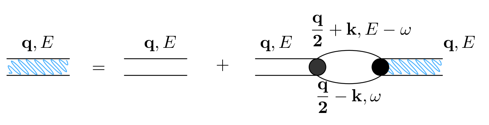
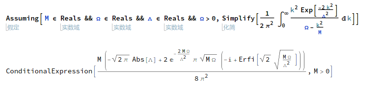

Model
Lagrangian
$$\begin{align} \mathcal{L} =&\sum_{\vec{k}}\psi_{\vec{k}}^{\dagger} \left( \mathrm{i}\partial_t - \frac{k^2}{2M} \right) \psi_{\vec{k}} + \sum_{\vec{q}}\frac{\bar{\nu}}{\bar{g}_d^2} d_{\vec{q}}^{\dagger}d_{\vec{q}} + \sum_{\vec{q}}\frac{1}{\bar{g}_s}\phi_{\vec{q}}^{\dagger} \phi_{\vec{q}} \\ & -\sum_{\vec{k},\vec{q}} \left[ \frac{\sqrt{2\pi}k^2Y_{20}(\hat{k}) e^{-k^2/ \bar{\Lambda}_d^2}}{\sqrt{V}} d^{\dagger}_{\vec{q}} \psi_{\vec{q}/2+ \vec{k}} \psi_{\vec{q}/2- \vec{k}} + \mathrm{H.c.}\right]\\ & - \sum_{\vec{k},\vec{q}}\left[ \frac{e^{-k^2/ \bar{\Lambda}_s^2}}{\sqrt{V}} \phi^{\dagger}_{\vec{q}} \psi_{\vec{q}/2 +\vec{k}}\psi_{\vec{q}/2-\vec{k}} + \mathrm{H.c.} \right] \end{align} $$s-wave
s 波部分的 Hamiltonian
$$\begin{align} H =&\sum_{\vec{k}} \frac{k^2}{2M}\psi_{\vec{k}}^{\dagger}\psi_{\vec{k}} - \sum_{\vec{q}}\frac{1}{\bar{g}_s}\phi_{\vec{q}}^{\dagger}\phi_{\vec{q}} + \sum_{\vec{k},\vec{q}}\left[ \frac{e^{-k^2/ \bar{\Lambda}_s^2}}{\sqrt{V}} \phi^{\dagger}_{\vec{q}} \psi_{\vec{q}/2 +\vec{k}}\psi_{\vec{q}/2-\vec{k}} + \mathrm{H.c.} \right] \end{align}$$首先计算最后一项的 s 波相互作用 T-matrix , T-matrix 与格林函数有如下联系
$$\begin{align} T_s(k \hat{k},k \hat{k}', E = \frac{k^2}{M}) = - \frac{4 e^{-2k^2/ \bar{\Lambda}_s^2}}{V} D_s(\vec{q}=0 , E = \frac{k^2}{M}) \end{align}$$
由上面的 Feynman 图对应的 Dyson 方程为 $D = D_0 + D_0 \Sigma D$ , 化 简为
$$\begin{align} \frac{1}{D} = \frac{1}{D_0} - \Sigma \end{align}$$其中 $D_0$ 是自由格林函数, 对于 s 波为
$$\begin{align} \frac{1}{D_0(\vec{q},E=\frac{k^2}{M})} = \frac{1}{\bar{g}_s} \end{align}$$计算自能 $\Sigma$ . 先算用松原频率求和算非零温情况
$$\begin{align} \Sigma (\vec{q}, \mathrm{i}\Omega_m ) =& \frac{1}{\beta}\sum_{n,\vec{k}}\frac{1}{\mathrm{i}\omega_n - E_{\frac{\vec{q}}{2}-\vec{k}}} \frac{1}{\mathrm{i}\Omega_m - \mathrm{i}\omega_n - E_{\frac{\vec{q}}{2}+\vec{k}}} \cdot \frac{e^{-2k^2 / \bar{\Lambda}_s^2}}{V}\\ =& \sum_{\vec{k}} \frac{1 +f(\frac{\vec{q}}{2} +\vec{k}) -f(\frac{\vec{q}}{2}-\vec{k})} {\mathrm{i}\Omega_m - E_{\frac{\vec{q}}{2}-\vec{k}} - E_{\frac{\vec{q}}{2} +\vec{k}} } \cdot \frac{e^{-2k^2 / \bar{\Lambda}_s^2}}{V} \\ =& \sum_{\vec{k}} \frac{1} {\mathrm{i}\Omega_m - E_{\frac{\vec{q}}{2}-\vec{k}} - E_{\frac{\vec{q}}{2} +\vec{k}} } \cdot \frac{e^{-2k^2 / \bar{\Lambda}_s^2}}{V} \\ \end{align}$$上式最后一个等号取 令 $f(\frac{\vec{q}}{2} + \vec{k})
f(\frac{\vec{q}}{2}-\vec{k})0$ .
做解析延拓 $\mathrm{i}\Omega_m\to E+\mathrm{i}0^+$ ,得到到零温自能
$$\begin{align} \Sigma (\vec{q}, E) =& \sum_{\vec{k}} \frac{1} {E - E_{\frac{\vec{q}}{2}-\vec{k}} - E_{\frac{\vec{q}}{2} +\vec{k}} +\mathrm{i}0^ +} \cdot \frac{e^{-2k^2 / \bar{\Lambda}_s^2}}{V} \\ =& \sum_{\vec{k}} \frac{1} {E - \frac{q^2}{4M}-\frac{k^2}{M} + \mathrm{i}0^ +} \cdot \frac{e^{-2k^2 / \bar{\Lambda}_s^2}}{V}\\ =& \sum_{\vec{k}} \frac{1} {\Omega-\frac{k^2}{M} + \mathrm{i}0^ +} \cdot \frac{e^{-2k^2 / \bar{\Lambda}_s^2}}{V} \end{align}$$上式最后一个第二个等号取 $E_{\frac{\vec{q}}{2}\mp\vec{k}} = \frac{1}{2M}\left( \frac{\vec{q}}{2}\mp\vec{k} \right)^2$ . 第三个等号记 $\Omega = E -\frac{q^2}{4M}$ .
上式求和化积分, 乘上因子 $\frac{V}{(2\pi)^3}$ , 积分对角度积分为 $4\pi$ , 只剩下对 $k$ 的积分
$$\begin{align} \Sigma (\vec{q}, \Omega) =& \frac{1}{2\pi^2}\int_0^{\infty}\left[\mathcal{P}\frac{ k^2e^{-2k^2 / \bar{\Lambda}_s^2} } {\Omega-\frac{k^2}{M} } - k^2e^{-2k^2 / \bar{\Lambda}_s^2} \cdot \mathrm{i}\pi \delta(\Omega -\frac{k^2}{M}) \right]\mathrm{d}k \\ =& \left[\frac{1}{2\pi^2}\int_0^{\infty}\mathcal{P}\frac{ k^2e^{-2k^2 / \bar{\Lambda}_s^2} } {\Omega-\frac{k^2}{M} } \mathrm{d}k\right] -\mathrm{i} \frac{M\sqrt{M\Omega}}{4\pi}e^{-2M\Omega / \bar{\Lambda}_s^2} \end{align}$$其中
$$\begin{align} \frac{1}{2\pi^2}\int_0^{\infty}\mathcal{P}\frac{ k^2e^{-2k^2 / \bar{\Lambda}_s^2} } {\Omega-\frac{k^2}{M} } \mathrm{d}k = -\frac{M \bar{\Lambda}_s}{4\pi\sqrt{2\pi}} +\frac{M\sqrt{M\Omega}}{4\pi} e^{-2M\Omega / \bar{\Lambda}_s^2} \mathrm{Erfi}\left(\frac{\sqrt{2M\Omega}}{\bar{\Lambda}_s}\right) \end{align}$$
将以上求得的自能 $\Sigma$ 代回到 T-matrix 的表达式
$$\begin{align} &\frac{1}{T_s(k \hat{k},k \hat{k}', E = \frac{k^2}{M})} \\ =& - \frac{V}{4 e^{-2k^2/ \bar{\Lambda}_s^2}} \left[\frac{1}{\bar{g}_s} +\frac{M \bar{\Lambda}_s}{4\pi\sqrt{2\pi}} -\frac{M\sqrt{M\Omega}}{4\pi} e^{-2M\Omega / \bar{\Lambda}_s^2} \mathrm{Erfi}\left(\frac{\sqrt{2M\Omega}}{\bar{\Lambda}_s}\right) + \mathrm{i}\frac{M\sqrt{M\Omega}}{4\pi}e^{-2M\Omega / \bar{\Lambda}_s^2}\right] \end{align}$$令 $\vec{q}=0$ , 则 $\Omega = E - 0 = \frac{k^2}{M}$ , 上式化为
$$\begin{align} &\frac{1}{T_s(k \hat{k},k \hat{k}', E = \frac{k^2}{M})} \\ =& - \frac{V}{4 e^{-2k^2/ \bar{\Lambda}_s^2}} \left[\frac{1}{\bar{g}_s} +\frac{M \bar{\Lambda}_s}{4\pi\sqrt{2\pi}} -\frac{M\sqrt{M\Omega}}{4\pi} e^{-2k^2 / \bar{\Lambda}_s^2} \mathrm{Erfi}\left(\frac{\sqrt{2M\Omega}}{\bar{\Lambda}_s}\right) + \mathrm{i}\frac{M\sqrt{M\Omega}}{4\pi}e^{-2Mk^2 / \bar{\Lambda}_s^2}\right] \\ =&- \frac{V}{4 e^{-2k^2/ \bar{\Lambda}_s^2}} \cdot \left[ \frac{1}{\bar{g}_s} +\frac{M \bar{\Lambda}_s}{4\pi\sqrt{2\pi}}\right] +\frac{MVk}{16\pi} \mathrm{Erfi}\left(\frac{\sqrt{2}k}{\bar{\Lambda}_s}\right) - \mathrm{i}\frac{MVk}{16\pi} \end{align}$$上式实部取到 $k$ 的零阶项
$$\begin{align} &\mathrm{Re}\left[\frac{1}{T_s(k \hat{k},k \hat{k}', E = \frac{k^2}{M})}\right] \\ =& -\frac{1}{4\bar{g}_s} -\frac{M V\bar{\Lambda}_s}{16\pi\sqrt{2\pi}} \end{align}$$已知的 s -wave phase shift (实部取了 $k$ 的零阶近似) 为
$$\begin{align} \frac{1}{T_s(k \hat{k},k \hat{k}', E = \frac{k^2}{M})} =& -\frac{VM}{8\pi}\left(-\frac{1}{a_s} - \mathrm{i}k \right) \\ =& \frac{VM}{8\pi}\frac{1}{a_s} + \mathrm{i}k\frac{VM}{8\pi} \end{align}$$对比以上三式, 虚部差一因子 $-2$ , 手动添上, 得到重整化关系
$$\begin{align} \frac{1}{\bar{g}_s} =& \frac{M}{4\pi a_s} -\frac{M \bar{\Lambda}_s}{4\pi\sqrt{2\pi}} = \frac{M}{4\pi a_s} -\frac{M }{2\pi^2} \int_0^{\infty}\mathrm{d}k \cdot e^{-2k^2/ \bar{\Lambda}_s^2} \end{align}$$将重整化关系代回 $D_s^{-1}$ 的表达式得
$$\begin{align} &\frac{1}{D_s(\vec{q},E = \Omega +\frac{q^2}{4M})}\\ =&\frac{1}{\bar{g}_s} +\frac{M \bar{\Lambda}_s}{4\pi\sqrt{2\pi}} -\frac{M\sqrt{M\Omega}}{4\pi} e^{-2M\Omega /\bar{\Lambda}_s^2} \mathrm{Erfi}\left(\frac{\sqrt{2M\Omega}}{\bar{\Lambda}_s}\right) + \mathrm{i}\frac{M\sqrt{M\Omega}}{4\pi}e^{-2M\Omega / \bar{\Lambda}_s^2} \\ =& \frac{M}{4\pi a_s} -\frac{M\sqrt{M\Omega}}{4\pi} e^{-2M\Omega / \bar{\Lambda}_s^2} \mathrm{Erfi}\left(\frac{\sqrt{2M\Omega}}{\bar{\Lambda}_s}\right) + \mathrm{i}\frac{M\sqrt{M\Omega}}{4\pi}e^{-2M\Omega / \bar{\Lambda}_s^2}\\ =& \frac{M}{4\pi a_s} + \frac{M\sqrt{-M\Omega}}{4\pi} \left[ 1 + \mathrm{Erf}\left( \frac{\sqrt{-2M\Omega}}{ \bar{\Lambda}_s} \right) \right] e^{- \frac{2M\Omega }{ \bar{\Lambda}_s^2}} \end{align}$$其中
$$\begin{align} \mathrm{Erfc}(x) = 1 - \mathrm{Erf}(x) = \frac{2}{\sqrt{\pi}} \int_x^{\infty} e^{-t^2}\mathrm{d}t \end{align}$$ $$\begin{align} \mathrm{Erfi}(z) = -\mathrm{i}\cdot\mathrm{Erf}(\mathrm{i}z) \end{align}$$ $$\begin{align} F(z) = \frac{\sqrt{\pi}}{2}e^{-z^2} \mathrm{Erfi(z)} \end{align}$$file:./2019-05-15-physics-PAR99/dawson.png
d-wave
s 波部分的 Hamiltonian
$$\begin{align} H =&\sum_{\vec{k}}\frac{k^2}{2M}\psi_{\vec{k}}^{\dagger}\psi_{\vec{k}} - \sum_{\vec{q}}\frac{\bar{\nu}}{\bar{g}_d^2} d_{\vec{q}}^{\dagger}d_{\vec{q}} +\sum_{\vec{k},\vec{q}} \left[ \frac{\sqrt{2\pi}k^2Y_{20}(\hat{k}) e^{-k^2/ \bar{\Lambda}_d^2}}{\sqrt{V}} d^{\dagger}_{\vec{q}} \psi_{\vec{q}/2+ \vec{k}} \psi_{\vec{q}/2- \vec{k}} + \mathrm{H.c.}\right] \end{align}$$与 s 波类似
$$\begin{align} \frac{1}{D} = \frac{1}{D_0} - \Sigma = \frac{\bar{\nu}}{\bar{g}_d^2}- \Sigma \end{align}$$其中
$$\begin{align} \Sigma (\vec{q}, E)= &\sum_{\vec{k}} \frac{1}{\Omega-\frac{k^2}{M} + \mathrm{i}0^ +} \cdot \frac{2\pi k^4 [Y_{20}]^2 e^{-2k^2 / \bar{\Lambda}_d^2}}{V}\\ =& \frac{5}{8\pi^2}\int_0^{\infty}\mathrm{d}k\cdot \frac{k^6 e^{-2k^2 / \bar{\Lambda}_d^2}} {\Omega-\frac{k^2}{M} + \mathrm{i}0^ +} \cdot\int_{-1}^1 \mathrm{d}x\cdot \left( \frac{3}{2}x^2 -\frac{1}{2} \right)^2 \\ =&\frac{1}{2\pi^2}\int_0^{\infty}\mathrm{d}k\cdot \frac{k^6 e^{-2k^2 / \bar{\Lambda}_d^2}} {\Omega-\frac{k^2}{M} + \mathrm{i}0^ +} \\ =& -\frac{\sqrt{2\pi}M \bar{\Lambda}_d[ 16(M\Omega)^2 +4M\Omega\bar{\Lambda}_d^2 + 3\bar{\Lambda}_d^4 ]}{128\pi^2} + \frac{e^{-\frac{2M\Omega}{\bar{\Lambda}_d^2}} M(M\Omega)^{5/2} \left[ -\mathrm{i} +\mathrm{Erfi}\left( \frac{\sqrt{2M\Omega}}{\bar{\Lambda}_d}\right) \right]} {4\pi}\\ =& -\frac{\sqrt{2\pi}M \bar{\Lambda}_d[ 16(M\Omega)^2 +4M\Omega\bar{\Lambda}_d^2 + 3\bar{\Lambda}_d^4 ]}{128\pi^2} + \frac{e^{-\frac{2M\Omega}{\bar{\Lambda}_d^2}} M(-M\Omega)^{5/2} \left[ -1- \mathrm{Erf}\left( \frac{\sqrt{-2M\Omega}}{\bar{\Lambda}_d}\right) \right]} {4\pi} \end{align} $$第二个等号取 $Y_{20}(\hat{k}) = \sqrt{\frac{5}{4\pi}}\left( \frac{3}{2}\cos^2\theta -\frac{1}{2} \right)$ .
file:./2019-05-15-physics-PAR99/dWaveInt.png
所以
$$\begin{align} \frac{1}{D_d(\vec{q},E)} =& \frac{\bar{\nu}}{\bar{g}_d^2} +\frac{\sqrt{2\pi}M \bar{\Lambda}_d[ 16(M\Omega)^2 +4M\Omega\bar{\Lambda}_d^2 + 3\bar{\Lambda}_d^4 ]}{128\pi^2} - \frac{e^{-\frac{2M\Omega}{\bar{\Lambda}_d^2}} M(M\Omega)^{5/2} \left[ -\mathrm{i} +\mathrm{Erfi}\left( \frac{\sqrt{2M\Omega}}{\bar{\Lambda}_d}\right) \right]} {4\pi}\\ =& \frac{\bar{\nu}}{\bar{g}_d^2} +\frac{\sqrt{2\pi}M \bar{\Lambda}_d[ 16(M\Omega)^2 +4M\Omega\bar{\Lambda}_d^2 + 3\bar{\Lambda}_d^4 ]}{128\pi^2} - \frac{e^{-\frac{2M\Omega}{\bar{\Lambda}_d^2}} M(-M\Omega)^{5/2} \left[ -1- \mathrm{Erf}\left( \frac{\sqrt{-2M\Omega}}{\bar{\Lambda}_d}\right) \right]} {4\pi} \end{align}$$已知的 $T_d$
$$\begin{align} T_d =& -\frac{32\pi^2}{MV}Y_{20}(\hat{k})Y_{20}(\hat{k'})\frac{k^4} {k^5 \cot \delta_d(k) - \mathrm{i}k^5} \\ \sim & -\frac{32\pi^2}{MV}Y_{20}(\hat{k})Y_{20}(\hat{k'})\frac{k^4} {-\frac{1}{D} -\frac{k^2}{v} -\frac{k^4}{R} - \mathrm{i}k^5} \end{align}$$用算得的 $D_d$ 得到的 $T_d$
$$\begin{align} T_d =& -\frac{8\pi k^4 Y_{20}(\hat{k})Y_{20} e^{-2k^2/ \bar{\Lambda}_d^2}}{V}D_d (\vec{q}=0, E = \frac{k^2}{M}) \\ \sim &-\frac{32\pi^2}{MV}Y_{20}(\hat{k})Y_{20}(\hat{k'})\frac{k^4} { \left[\frac{4\pi}{M}\frac{\bar{\nu}}{\bar{g}_d^2} + \frac{\bar{\Lambda}_d}{16\sqrt{2\pi}} \left( 16k^4 + 4\bar{\Lambda}_d^2k^2 +3 \bar{\Lambda}_d^4 \right) \right] \left[ 1 + \frac{2}{\bar{\Lambda}_d^2}k^2 + \frac{2}{\bar{\Lambda}_d^4}k^4\right] + \mathrm{i}k^5 } \\ \sim &-\frac{32\pi^2}{MV}Y_{20}(\hat{k})Y_{20}(\hat{k'})\frac{k^4} { \left[\frac{4\pi}{M}\frac{\bar{\nu}}{\bar{g}_d^2} + \frac{3}{16\sqrt{2\pi}} \bar{\Lambda}_d^5 + k^2\left( \frac{8\pi}{M \bar{\Lambda}_d^2}\frac{\bar{\nu}}{\bar{g}_d^2} + \frac{5}{8\sqrt{2\pi}} \bar{\Lambda}_d^3 \right) + k^4\left( \frac{8\pi}{M \bar{\Lambda}_d^4}\frac{\bar{\nu}}{\bar{g}_d^2} + \frac{15}{8\sqrt{2\pi}} \bar{\Lambda}_d \right) \right] + \mathrm{i}k^5 } \end{align}$$对比以上两式可得重整化关系 (差一负号)
$$\begin{align} \frac{1}{D} & =\frac{4\pi}{M}\frac{\bar{\nu}}{\bar{g}_d^2} + \frac{3}{16\sqrt{2\pi}} \bar{\Lambda}_d^5 \\ \frac{1}{v} & =\frac{8\pi}{M \bar{\Lambda}_d^2}\frac{\bar{\nu}}{\bar{g}_d^2} + \frac{5}{8\sqrt{2\pi}} \bar{\Lambda}_d^3 \\ \frac{1}{R} & =\frac{8\pi}{M \bar{\Lambda}_d^4}\frac{\bar{\nu}}{\bar{g}_d^2} + \frac{15}{8\sqrt{2\pi}} \bar{\Lambda}_d \end{align}$$Acknowledge
StackExchange:
https://math.stackexchange.com/questions/3231991/an-integration-about-error-function
Reference
PRA 99, 012701(2019)